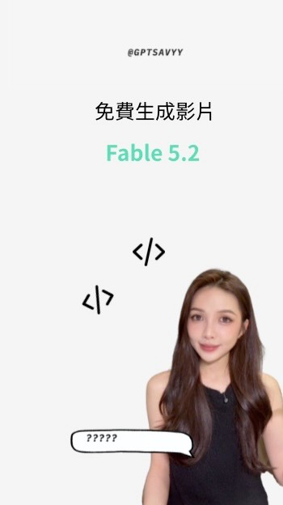

Braydon Carter Facebook Reel｜Claude 連接 Higgsfield：把文字助理變成 AI 圖像生成工作流

一句話摘要
這支 Reel 的重點是把 Claude 從純文字助理延伸成創意生成入口：Claude 負責構思、提示詞與流程編排，Higgsfield 負責圖像、照片與影片生成。
來源與限制
來源：Facebook Reel
作者：Braydon Carter
原始分享網址： https://www.facebook.com/share/r/1EmSvw3dKL/?mibextid=wwXIfr
Canonical Reel： https://www.facebook.com/reel/2384913761992032
擷取限制：Facebook 未登入狀態下可見貼文文案、hashtags、作者與目前影片幀；未能取得留言、完整操作步驟或任何私有資源連結。因此本筆記只整理公開可見資訊與官方來源交叉驗證，不聲稱已重現作者完整工作流。
Reel 可見內容
Facebook 可見文案：
- Claude can now make amazing images by connecting it to higgsfield!
- #claude #aiphoto #aiimage #claudetiktok #ai
影片畫面顯示 Braydon Carter 展示某個螢幕操作或生成結果，但目前可見幀不夠清晰，無法可靠讀出完整 UI 步驟。可確認的主題是 Claude + Higgsfield + AI image/photo + TikTok/短影音素材。
官方驗證：Higgsfield 是什麼
Brave Search 與 Higgsfield 官方頁面顯示，Higgsfield 定位為 AI video & image generation infrastructure，可用 text prompts 或 reference images 生成、編輯與放大圖像/影片，也提供 web/mobile 創作體驗。
官方相關頁面包含：
- Higgsfield 首頁：主張可建立 images、videos、voice content。
- AI Image Generator：支援多個圖像模型與 4K 圖像輸出等能力主張。
- AI Video Generator：支援多個影片模型與 cinematic / motion 控制。
- Claude AI Image Generator / Claude AI Video Generator：主張透過 MCP 將 Claude 連接到 Higgsfield。
- Higgsfield MCP / CLI：主張可加到 Claude、Claude Code 或其他 MCP-compatible client。
- `higgsfield-ai/higgsfield-js`：官方 Node.js / TypeScript SDK，可呼叫 Higgsfield video and image generation APIs。
這些來源支持 Reel 的基本說法：Claude 可以透過 Higgsfield 的 MCP / API / CLI 類型介面，間接觸發 AI 圖像或影片生成。
技術層次拆解
這類工作流可以分成三層：
1. Claude：創意與指令編排層
Claude 可負責：
- 將使用者需求轉成更完整的圖像 prompt。
- 產生多組構圖、鏡頭、角色、風格變體。
- 協助改寫 TikTok / Reels 的短影音腳本。
- 根據生成結果繼續提出修改方向。
2. Higgsfield：生成模型與媒體工具層
Higgsfield 可負責：
- text-to-image。
- reference image / photo-based generation。
- image-to-video 或 video generation。
- 角色一致性、影像放大、編輯與素材迭代。
- 多模型切換與輸出比較。
3. TikTok / Reels：內容發布與成效層
Hashtag `#claudetiktok` 暗示這套流程面向短影音內容：
- 先用 Claude 產出腳本與視覺 prompt。
- 用 Higgsfield 生成圖片或影片素材。
- 再轉成 TikTok / Reels 可用內容。
- 根據成效再迭代新的素材與版本。
與 MCP / API 的關係
Higgsfield 官方頁提到 MCP、CLI 與 SDK。三者角色不同：
- MCP：讓 Claude / Claude Code / 其他 agent 以工具方式呼叫 Higgsfield。
- CLI：讓命令列或 coding agent 在終端機中生成圖片/影片。
- SDK/API：讓開發者把 Higgsfield 嵌入自家產品或自動化流程。
若只是個人創作，MCP 或 web app 可能足夠；若要做批量內容產線或產品化服務，SDK/API 才是更穩定的整合方式。
實務採用前檢查表
導入 Claude + Higgsfield 之前，建議先確認：
- 是否需要 Higgsfield 帳號、API key、額度或付費方案。
- MCP server URL、OAuth / login 流程與權限範圍。
- 生成內容的商用授權、肖像權、品牌/商標限制。
- 圖像與影片是否會被平台保存，用於訓練或公開展示。
- 是否支援批量生成、版本管理與下載。
- 若串 Claude Code / CLI，是否會把敏感素材保存在專案資料夾。
- TikTok / Reels 發布前是否保留人工審核，避免誤發未授權素材。
對 AI 學習雷達的判讀
這則 Reel 值得保存，因為它展示了 agent 與生成式媒體平台結合的新方向：LLM 不再只是寫 prompt，而是成為「創意總控台」。當 Claude 能透過 MCP / API 呼叫 Higgsfield 這類視覺平台，創作流程就從單次生成變成可迭代的內容管線。
對欒帥的應用脈絡，它可作為：
- Claude + MCP + AI image/video 的課程案例。
- 短影音素材自動化的工具鏈筆記。
- 比較 Higgsfield、fal、Replicate、Runway、Kling、Veo 等平台的起點。
- 設計「文字腳本 → 視覺 prompt → 圖像/影片 → 社群發布」工作流的參考。
2026-11-10 補充：S 的 AI 研究所 Reel 與 Fable 5.2 的免費說法

來源為 S 的 AI 研究所的公開 Reel： https://www.facebook.com/reel/29101406369512030 。作者文案聲稱 Claude Fable 5.2 上線、連接 Higgsfield AI MCP 可生成影片，留言「fable」可取得連結。抽看的影片字幕另外聲稱可免費無限使用所有支援的影片模型連續三天；這是作者的活動說法，不是本次驗證結果。實際設定連結需留言取得，本次未留言、未取得或測試。
官方核對（2026-11-10）：
- Claude Fable 5.2 是 Anthropic 官方真實模型，不是 Fable 的誤拼。官方列出 2026-11-09 發布、API 型號 claude-fable-5-2，文字與圖片輸入、文字輸出；影片生成並非該規格所列的原生影片輸出。Higgsfield 官網確有 Claude MCP 圖像／影片工作流，Claude 與 Higgsfield 的模型服務和費用應分開看。
- Anthropic 官方列 Fable 5.2 標準 API 每百萬輸入 token 8 美元、輸出 40 美元；不等於 Claude 訂閱的計價。官方模型頁稱此模型需保留資料 30 天，除非 Anthropic 明確授權，不適用零資料保留；不同產品、介面及合約仍須分開確認。
- Higgsfield 價格頁有 Free 有限使用與不同付費方案，並明列方案的 Unlimited models 和 Free Generations 僅可在 higgsfield.ai 使用，不適用 MCP／CLI、Canvas 或 Supercomputer。頁面列出的影片 credits 因模型及設定而異；不能把官網免費／無限權益套到 MCP。未找到支持作者所稱所有支援模型連續三天免費無限的官方活動條款，未查到不代表歷史活動不曾存在；期限、資格和適用範圍均未核實。
- 安全：MCP 連接會引入第三方服務與工具權限；應核對官方網域、連接器提供者、授權範圍與撤銷方式，避免貼入 API key、私密資料或未獲授權的影像，防範外部內容提示注入，並對付費生成及對外操作人工確認。不要執行來路不明的安裝腳本；本次未安裝、登入、授權、付款或實測。
媒體證據：公開影音分離軌各約 25.93 秒，影片每秒抽格檢視而非逐幀觀看；音軌以本機 Whisper 輔助轉錄，未人工聆聽校訂，無可靠完整逐字稿。圖為該 Reel 公開壓縮封面 350×624，經檢視可見人物肖像與公開帳號標記，未見憑證或私人聊天；作者 S 的 AI 研究所，重用授權未確認。影片畫面所示的成果及後端設定未獨立實測。
- 使用者分享： https://www.facebook.com/share/r/1E98NuT2rW/?mibextid=wwXIfr
- Anthropic 模型頁： https://platform.claude.com/docs/en/models/fable-5-2/overview
- Higgsfield MCP： https://higgsfield.ai/mcp
- Higgsfield 方案與限制： https://higgsfield.ai/pricing
- MCP 安全文件： https://modelcontextprotocol.io/docs/2026-07-28/tutorials/security/security_best_practices
原始連結
- Facebook 分享網址： https://www.facebook.com/share/r/1EmSvw3dKL/?mibextid=wwXIfr
- Facebook Reel： https://www.facebook.com/reel/2384913761992032
- Higgsfield： https://higgsfield.ai/
- Higgsfield MCP： https://higgsfield.ai/mcp
- Claude AI Image Generator by Higgsfield： https://higgsfield.ai/claude-ai-image-generator
- Claude AI Video Generator by Higgsfield： https://higgsfield.ai/claude-ai-video-generator
- Higgsfield SDK： https://github.com/higgsfield-ai/higgsfield-js